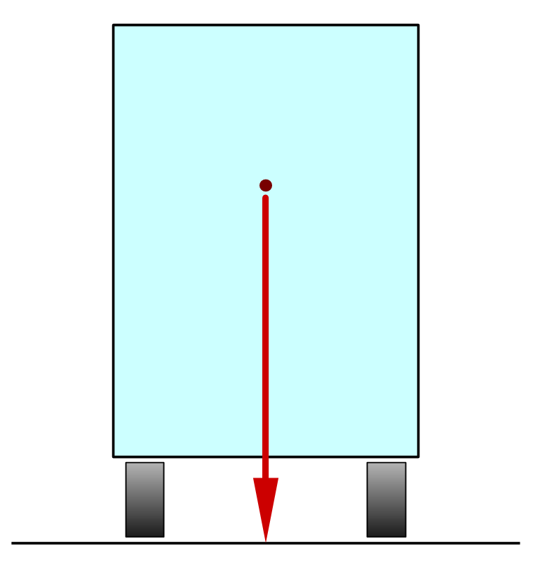
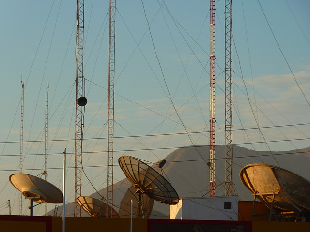
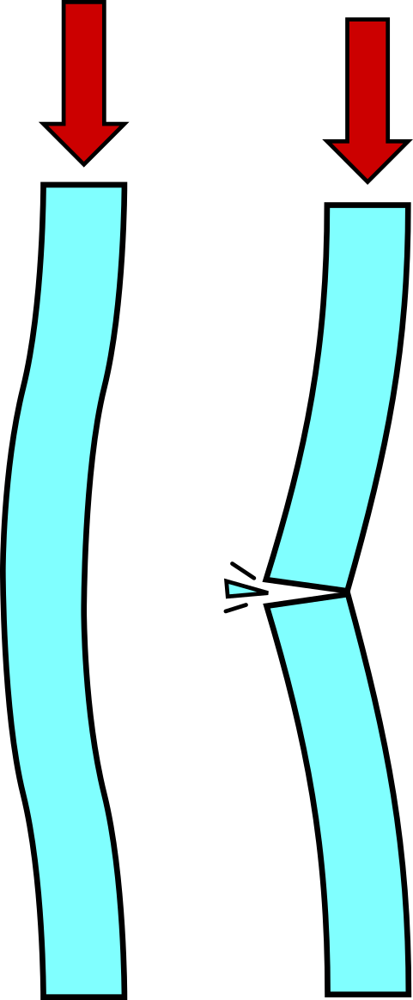

Stability¶
The structures we are studying, in addition to being rigid to support loads without breaking or deforming, must be stable so as not to overturn, bend or oscillate in the face of external forces.
There are several problems that can appear in a structure when it is not stable enough. The most common ones are explained below.
Rollover¶
The overturning of a structure occurs when its center of gravity falls outside its support base.
- Center of gravity:
It is the point where all the mass of the structure is concentrated. It is the place where, if we support it, it will not fall anywhere.
In the case of a hammer, for example, the center of gravity is in the handle, very close to the head, which is the heaviest part.



On the truck in the figure, the center of gravity is marked with a red dot and is located quite high.
In the first image, the center of gravity falls within the support base, so the truck is stable.
In the second image, the truck is tilted and the center of gravity is about to leave the base. It's close to capsizing.
In the third image, the center of gravity is no longer on the support base. In this case the truck is unstable and will overturn.
For overturn to occur, the center of gravity must fall outside the support area of the structure on the ground.
Solutions to rollover¶
There are several ways to prevent a structure from overturning.
- Add a counterweight
When a structure leans too much to one side, a counterweight placed on the opposite side can balance it.
Example: Counterweights on construction cranes or truck cranes.
- Expand the support base
The larger the base of support, the more difficult it will be for the center of gravity to leave it.
Examples: Crane trucks with extendable supports. Very wide sports cars. People spread their feet apart to increase their stability when the ground moves.
- Lower the center of gravity
The lower the center of gravity, the more difficult it will be to leave the base of support.
Examples: In a truck, place heavy objects on the bottom and light objects on top. Sports cars are low to have a low center of gravity and be more stable.
- Anchor the structure to the ground
This solution consists of joining the structure to the ground to increase its stability.
Examples: Winds from a tent. Antenna anchoring cables. Street lights or masts fixed to the ground.

Radio antennas with winds to anchor them to the ground.¶
Image of LoggaWiggler in Pixabay.

{kind=link}
{kind=link}
{kind=link}
{kind=link}
Buckling¶
{kind=link}

Buckling <https://es.wikipedia.org/wiki/Pandeo>`__ is an instability that occurs in slender bars and columns subjected to compression.
When a bar is very long and narrow (slender), it runs the risk of bending and losing strength. If buckling continues, the bar may break and fail.
Solutions to buckling¶
- Make the profile thicker
If we increase the thickness of the profile of the bar or column, it will no longer be slender and will not buckle.
For example, a thick tube with thin walls may be more resistant to buckling than a solid bar of the same weight. That's why bicycles use tubular bars and power towers use L-shaped bars.
- Hold the center of the bar
If the bar is held in the center to prevent it from moving, buckling will not occur.
For example, a high voltage tower has four slender vertical bars and other horizontal and oblique bars that join them together and prevent them from buckling.
Oscillations¶
Oscillations or vibrations of a structure can be beneficial or harmful.
In some cases it is advisable that the structure is not completely rigid. If it can flex and oscillate under an external load, it avoids breaking. This occurs in skyscrapers during an earthquake or high winds. The masts of ships and the wings of airplanes also oscillate to adapt to the efforts.
In other cases, the oscillations may increase little by little, as in a swing, until the structure collapses. This occurred on the famous Tacoma Narrows Bridge, nicknamed Gallopin' Gertie for its large oscillations. A wind of only 64 km/h toppled it a few months after its inauguration, without causing any casualties.
You can see a recording of the event on YouTube:
Oscillations can also produce annoying noises and vibrations, especially when they coincide with the resonance frequency of the structure. If a vibration is repeated at that frequency, the oscillation can increase greatly.
Solutions to oscillations¶
- Avoid swinging loads
- This solution is applied by soldiers when crossing a bridge that is not very rigid: they stop walking at the same pace to prevent the bridge from going into resonance [1].
- Cushion the structure
- Shock absorbers are used in earthquake-resistant vehicles and buildings, which absorb the energy of oscillations and reduce resonance.
- Video: tuned mass damper
- Video: 'didactic example of earthquake resistant structure. <https://www.youtube.com/watch?v=QUI7acilEJo>`__
Exercises¶
- Explain in your words what the difference is between stability and rigidity in a structure.
- What stability problems can structures have?
- When does a structure overturn? What is the center of gravity of a structure?
- Draw a structure that is not very stable to overturning and another that is very stable to overturning.
- What solutions are there to prevent a structure from overturning? Write an example of each one.
- Think about a tall, narrow bookshelf. List all the stability problems you may have and how you can solve them.
- What is buckling?
- What solutions are there to avoid buckling? Write an example of each one.
- In a high tension tower, identify which elements prevent buckling and which prevent overturning.
- How can harmful oscillations in a structure be avoided?
- What is a shock absorber and what is it for?
Unit test¶
Printable unit¶
Unit in printable format, with questions.
Grades
| [1] | The Broughton Bridge was a suspension bridge in Manchester, England, which in 1831 collapsed following the passage of a troop of soldiers walking in formation. |